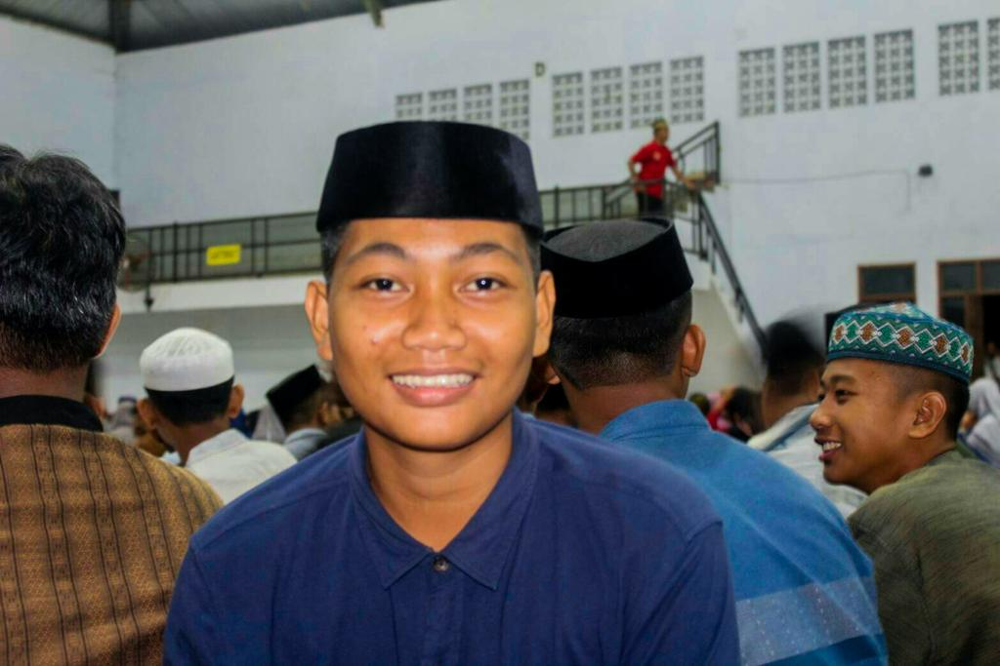

Curiculum Vitae (CV)
BIODATA PRIBADI

Nama Lengkap : Yayang teguh sanjaya
Jenis Kelamin : Pria
Tempat Tanggal Lahir : Sorong, 10 Oktober 2000
Status : Mahasiswa
Tinggi Badan : 175 Cm
Berat Badan : 80 Kg
Agama : Islam
Telepon : 082189832985
Email : yayangteguhsanjaya10@gmail.com
RIWAYAT PENDIDIKAN
SD : SD INPRES 103 (tahun 2006-2012)
SMP : MTS AL-IKHLAS UJUNG BONE (tahun 2012-2015)
SMA : MA AL-IKHLAS UJUNG BONE (tahun 2015-2018)
Perguruan Tinggi : Universitas Muhammadiyah Sorong (tahun 2018- sekarang)
KEMAMPUAN
Pengalaman Kerja : Membantu orang tua
Skill : Mencintai seseorang dengan tulus
Hobby : GAME